Specialist consultants
Engineering, water resources, environmental safeguards, economics and licensed technical disciplines.

Connect as a consultant, researcher, engineer, designer, software specialist or project collaborator. We do not advertise positions or partnerships that have not been confirmed.
SPEDAR is developing project-based technical and research capacity. Relevant expressions of interest are welcome, although there are no advertised vacancies or guaranteed assignments on this page.
Meet the current teamEngineering, water resources, environmental safeguards, economics and licensed technical disciplines.
University and institutional research, field studies, GIS, analytical and policy work.
Software, dashboards, communication design and field technology.
Potential teaming and consortia approaches, discussed case by case with proper documentation.
Include your speciality, location, availability and a portfolio or CV link. No active job vacancy is implied.